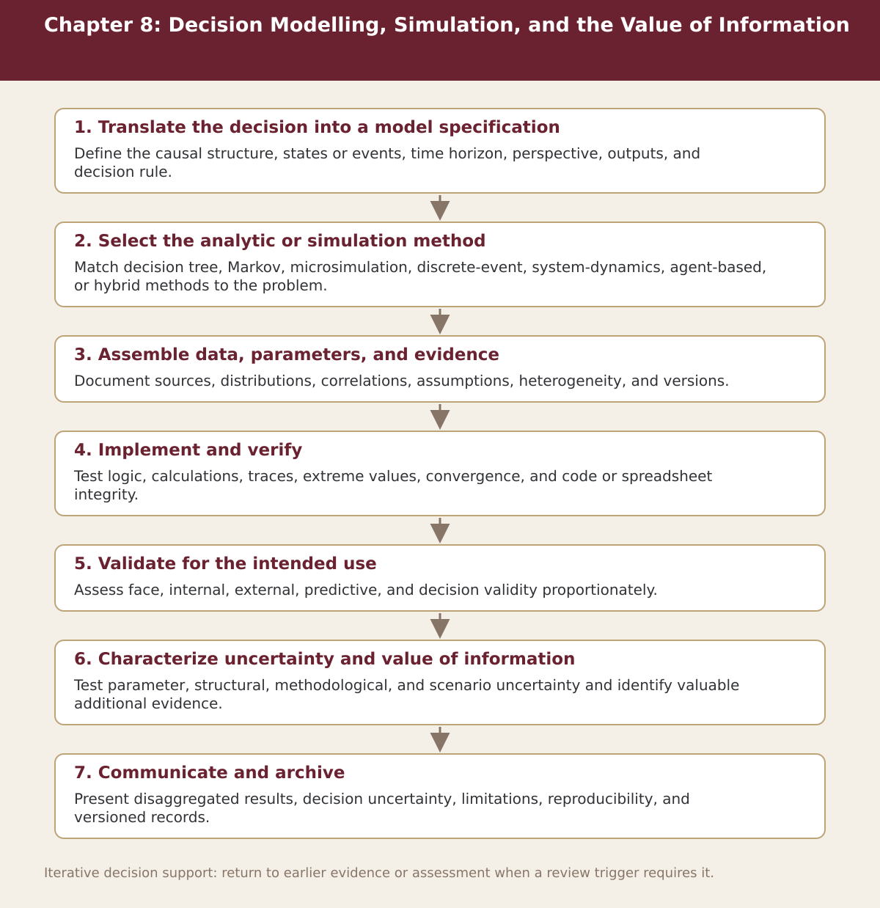

Chapter 8
Decision Modelling, Simulation, and the Value of Information
Chapter-level process map linking the chapter’s decision questions to the companion resources and decision gates.

Process steps
| Step | Stage | Purpose | Required Input | Expected Output | Decision Or Gate |
|---|---|---|---|---|---|
| 1 | Translate the decision into a model specification | Define the causal structure, states or events, time horizon, perspective, outputs, and decision rule. | Local evidence and the prior approved step | Versioned record for: Translate the decision into a model specification | Proceed, revise, escalate, restrict, or stop as appropriate |
| 2 | Select the analytic or simulation method | Match decision tree, Markov, microsimulation, discrete-event, system-dynamics, agent-based, or hybrid methods to the problem. | Local evidence and the prior approved step | Versioned record for: Select the analytic or simulation method | Proceed, revise, escalate, restrict, or stop as appropriate |
| 3 | Assemble data, parameters, and evidence | Document sources, distributions, correlations, assumptions, heterogeneity, and versions. | Local evidence and the prior approved step | Versioned record for: Assemble data, parameters, and evidence | Proceed, revise, escalate, restrict, or stop as appropriate |
| 4 | Implement and verify | Test logic, calculations, traces, extreme values, convergence, and code or spreadsheet integrity. | Local evidence and the prior approved step | Versioned record for: Implement and verify | Proceed, revise, escalate, restrict, or stop as appropriate |
| 5 | Validate for the intended use | Assess face, internal, external, predictive, and decision validity proportionately. | Local evidence and the prior approved step | Versioned record for: Validate for the intended use | Proceed, revise, escalate, restrict, or stop as appropriate |
| 6 | Characterize uncertainty and value of information | Test parameter, structural, methodological, and scenario uncertainty and identify valuable additional evidence. | Local evidence and the prior approved step | Versioned record for: Characterize uncertainty and value of information | Proceed, revise, escalate, restrict, or stop as appropriate |
| 7 | Communicate and archive | Present disaggregated results, decision uncertainty, limitations, reproducibility, and versioned records. | Local evidence and the prior approved step | Versioned record for: Communicate and archive | Proceed, revise, escalate, restrict, or stop as appropriate |